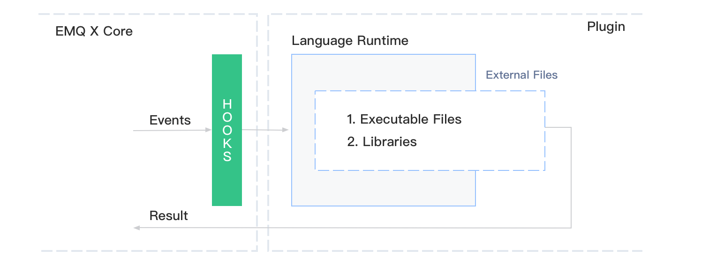

多语言支持
从 4.1 开始，EMQ X 提供了专门的多语言支持插件：emqx_extension_hook 以优化多语言的支持效果。
该插件允许你使用其它编程语言来处理 EMQ X 中的钩子事件，例如：
- 认证某客户端的登录权限。
- 校验某客户端的 PUB/SUB 的操作权限。
- 处理 会话(Session) 和 消息(Message) 事件。
注：消息(Message) 类钩子，仅在企业版中支持。
架构
其整体的事件传递的架构如下：
EMQ X
+============================+
| Extension |
+----------+ CONNECT | Hooks +----------------+ |
| Client | <===========> - - - ->| Drivers | |
+----------+ PUB/SUB | +----------------+ |
| | |
+===============|============+
|
| Callbacks
Third-party Runtimes |
+=======================+ |
| Python Script/ Java |<-----+
| Classes/ Others |
+=======================+
emqx_extension_hook作为 EMQ X 的插件：- 它会接收 EMQ X 所有的钩子事件，并将其分发到对应的 驱动(Driver) 上。
- 提供对驱动的管理、各个指标的统计。
不同语言的支持，需要对应的驱动支持。
三方语言的运行时和 Erlang 的运行时相互独立，他们仅通过操作系统提供的管道进行通信。
理论上，对于其他任意的编程语言都能通过该插件进行扩展，仅需完成对应的驱动即可。
目前仅提供 Python 和 Java 的支持，并提供了对应的 SDK 以方便开发。
快速使用
Python
Python 开发可参考：emqx-extension-python-sdk
Java
Java 开发可参考：emqx-extension-java-sdk
其他
在 EMQ X 4.1 之前。我们仅提供 Lua 的多语言支持。它的架构与上面提到的不同，它会将整个语言的运行时，包含在 Erlang VM 中：

- 多语言支持是作为一个插件出现，不同的语言环境，需要有不同的语言支持插件。
- 该支持插件内嵌了该语言运行时的所有环境。
为了保持兼容，该插件仍然保留在 EMQ X 的发行版本中。
Lua
Lua 的支持由 emqx_lua_hook 实现。它包括：
- 一套 Lua 的运行时环境，由 luerl 实现。
- 一些控制命令，用于管理 Lua 的加载和卸载等。
示例
在 EMQ X 发行包中，用户自定义的 Lua 脚本文件应该放在 data/script/ 中。
以控制消息的发送内容为例，新增文件 data/script/test.lua：
function on_message_publish(clientid, username, topic, payload, qos, retain)
return topic, "hello", qos, retain
end
function register_hook()
return "on_message_publish"
end
该脚本表明：
- 实现了一个回调函数
on_message_publish，将所有发布消息的payload字段修改为hello。 - 用
register_hook告诉emqx_lua_hook，需要注册的回调函数名称列表。
值得注意的是，这些回调函数的名称、参数、返回值的数据类型和个数都是固定，必须与提供的示例一致。
脚本编写完成后，需要手动将其加载至 emqx_lua_hook 插件中：
首先确保 emqx_lua_hook 插件已经启动：
./bin/emqx_ctl plugins load emqx_lua_hook
加载 test.lua 到 emqx_lua_hook 中：
./bin/emqx_ctl luahook load test.lua
执行成功，则表示脚本已成功加载。否则，请检查源文件的语法格式是否正确。
完成后，可以启动两个 MQTT 客户端，一个订阅主任意主题，另一个发布任意消息到刚刚订阅的主题上。可发现订阅端收到的消息内容都是 hello。证明 test.lua 脚本已经生效。
回调函数
支持的回调函数，及参数类型参考：emqx-lua-hook - README.md
示例参考：examples.lua
命令
加载指定 Lua 脚本：
## Script：脚本文件名称
luahook load <Script>
卸载指定 Lua 脚本：
luahook unload <Script>
重新加载指定 Lua 脚本：
luahook reload <Script>
加载指定 Lua 脚本，并设置其跟随 emqx_lua_hook 启动时一同启动：
luahook enable <Script>
卸载指定 Lua 脚本，并取消跟随 emqx_lua_hook 一同启动：
luahook disable <Script>